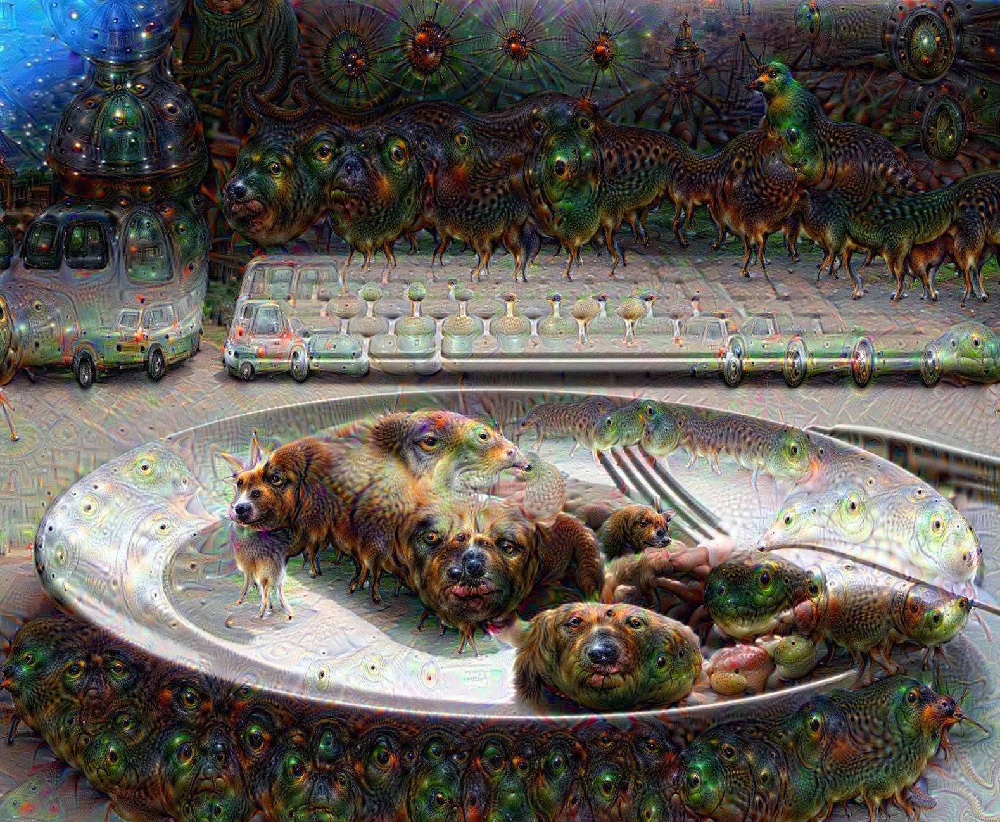
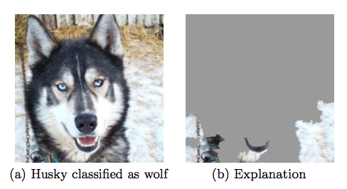
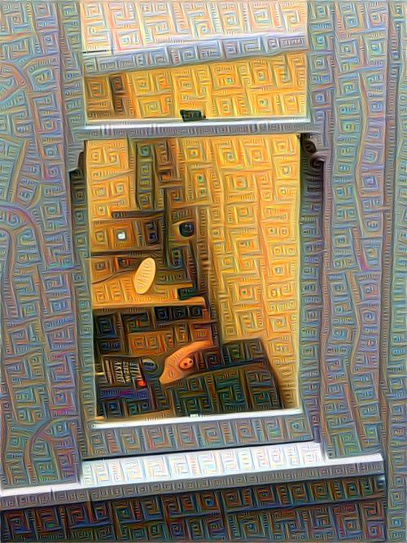
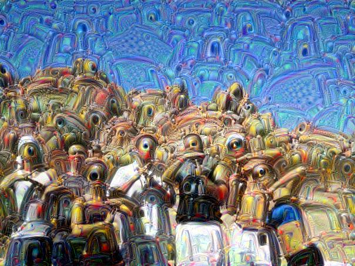
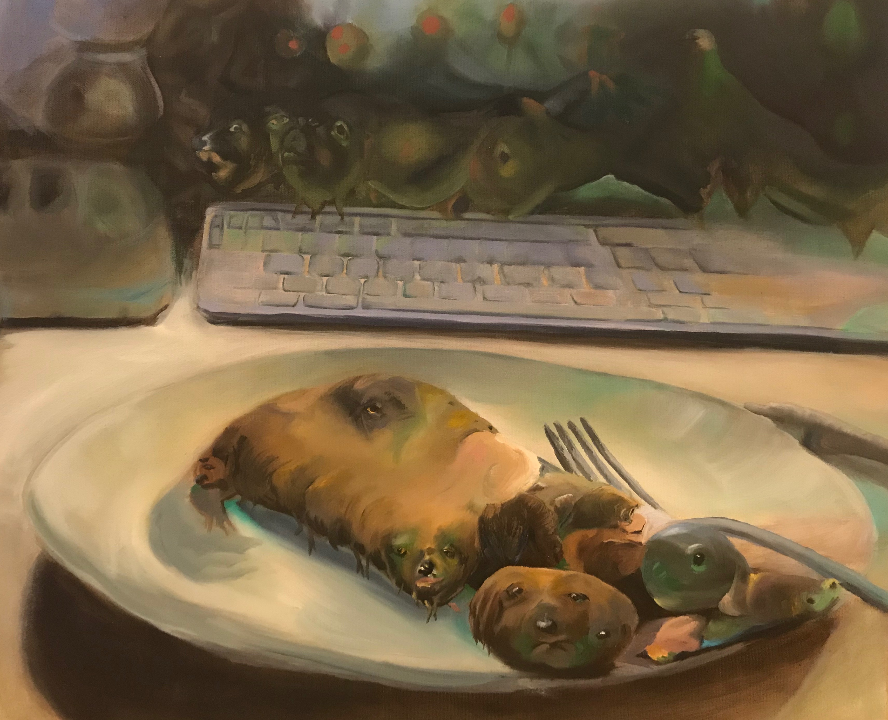
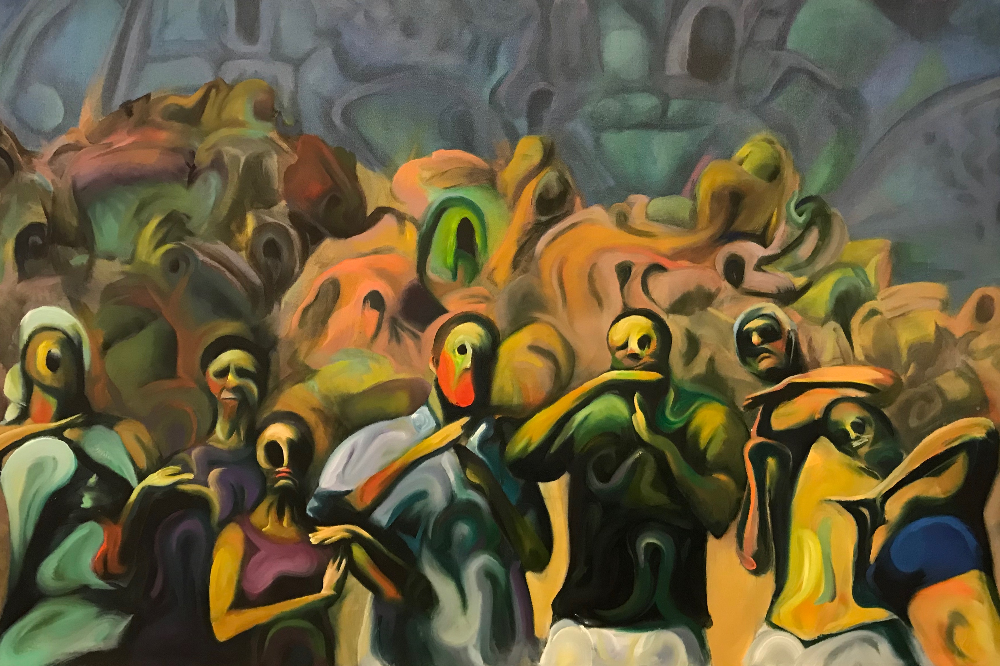

Understanding Deepdreams
We know that some kind of computer vision exists in our world and affects us, often invisibly: when we get our picture taken at customs before crossing a border, when social networks suggest friends for us to tag in photos, or when iPhone X users unlock their phones.
But what exactly happens to these images that are taken of us by security cameras, or that we upload to our favorite social media platforms? How can an algorithm even make sense of an image? What patterns or features of an image does an algorithm use to form an understanding? What types of situations cause these algorithms to make mistakes?
Until fairly recently, even top researchers didn’t have the answers to some of those questions. [explainable]. As computer vision algorithms have rapidly improved in accuracy, they’re also grown far more complex. As these techniques are increasingly being used behind-the-scenes by the apps and algorithms that affect our daily lives, understanding what goes on inside these “black box” algorithms becomes more pressing.
With this motivation, researchers have made progress in visualizing the internals of neural networks. “Deep Dreams” are one of the methods researchers have found to get neural networks to describe their archetypal representations of individual concepts they’ve been trained to recognize (e.g. the most “catlike” cat).

I’ve grown interested in playing around with techniques like this for artistic purposes. It can be pretty tough to explain to someone unfamiliar with AI why a picture of a hot pocket got turned into a bear.
What are vision algorithms used for?
So what kinds of tasks are these models used for? For the sake of simplicity, we’ll consider a common use case: “supervised learning”. These days, it’s not uncommon to have millions (or billions) of images laying around, and a pretty urgent need to understand what’s going on inside them. Specifically, we often want to “classify” our data - e.g. tell whether a handwritten digit is a 0 or a 1, or tell whether an image contains a cat or a dog. Supervised learning means that we start with a labeled dataset; for each input image, we have some reliable labels (often hand-curated by humans) of what a correct response from the classifier would be.
What’s the point of going to all the trouble of curating labeled data and training a model? Paying a team of human workers go through and label each picture gets expensive. Suppose it costs a few cents per image. Even labeling 100,000 images (a relatively small number these days) costs thousands of dollars and takes dozens or hundreds of person-hours. With model trained on the right data, it’s possible to make the same assessments of images on a much larger scale - making billions of decisions in minutes or hours is well within the realm of possibility. Given the impact of these methods and the well-established tooling around them, this type of machine learning application is far more widely adopted in the industry than some of the things people tend to think of when they think of AI/ML, such as chat bots or driverless cars.
Why Neural Networks?
In a relatively short time span, neural networks have far surpassed previous techniques in computer vision. “Classic” computer vision techniques required programmers to hand-specify rules or patterns. For instance, “noses tend to be triangular shapes of similar-colored pixels”, or “eyes tend to be located above noses”. Neural network models are thought to outperform these methods in part because they allow programmers to set up an “empty slate” of neurons, layered into a hierarchy. The blank slate gives the model freedom to identify and learn only the patterns that are most useful for the task it’s being trained for, and the layering enables the model to learn not just pixel-level patterns, but also more abstract concepts and features.
The layered nature of neural networks means that given enough data, a sufficiently deep model’s hidden layer inputs could end up capturing more abstract and generalizable properties.
Here’s another way to think about it. Imagine that it’s your job to classify these tiny images as 1’s or 0’s. Now suppose you’re allowed to ask several questions, without looking at the original image, and then base your classifications solely on the answers to those questions. If your questions aren’t working, you’re allowed to ask new ones. If you’re being judged on your accuracy and did this repeatedly, the quality of your questions will ultimately determine how accurate your predictions can be, rather than how well you’re able to interpret the output of mediocre questions.
For instance, questions like these are likely to help us understand if the image is a “1”:
- Are the pixels in a straight line?
- Is the total height of the filled-in pixels higher than the total width?
While questions like these could be answered extremely accurately but fail to provide any help in our task of classification:
- Are more than half the pixels filled in?
- Is the top left pixel filled in?
A simplified way of understanding the hidden layers is that they allow the network to store answers to these questions, where each question is a function of the input pixels. Then the output layer learns relationships between these questions and the classes it is trying to tell apart. The nuance is that during training, backpropagation forces the questions to gradually evolve into questions that help the model make more accurate decisions.
Training a model involves exploring this latent space of questions through trial and error, and preserving the questions that contribute to the most accurate answers. In a way, it can be thought of as a way of compressing the original information into a more compact form, preserving only the information most critical to making a correct prediction. In the example above, if we trained a model with 9 input pixels and 3 neurons in our hidden layer and it was only 5% less accurate than one with 9 neurons in the hidden layer, we’ve still managed to squeeze 95% of the relevant “information” into 1/3 the “space”.
Convolutional Neural Nets
On more complex problems, such as telling images of animals apart, a class of neural nets called convolutional neural nets (CNN’s) has been proven very successful at computer vision tasks previously considered extremely difficult. Without specific instructions on what to look for, its hidden layers will learn to identify features such as snouts, ears, eyes, fuzziness. This allows such models to generalize far beyond any patterns at the individual pixel.
The problem is, despite how well these algorithms work on supervised learning problems, researchers still have a hard time understanding why a network makes the choices it makes, or what kinds of features it’s actually learning. As these algorithms are increasingly integrated into systems that affect the lives of real people, we’re going to need to make sure that the models are learning features that we’re comfortable with it using. Bias in the Training Data Compiling labeled data is an inherently human process. It’s fraught with cultural biases based on our own understanding of the world, and it’s expensive enough to gather and label that there’s no way for the training data to ever fully encompass the range of inputs a model can expect to see once it’s out in the wild.
For instance, if a training dataset includes many pictures of wolves in the snow, it could incorrectly learn that the presence of snow indicates that an image contains a wolf. A real example from "Why should I trust you?”: Explaining the Predictions of Any Classifier, Ruberio et al. 2016:

This example is innocuous, but it’s proof that much worse could happen if machine learning practitioners aren’t careful. If algorithms determining our credit scores or criminal sentences began to take race into account, for example, the cost to society would be severe. Feature Visualization It’s nearly impossible to determine the level of bias in a dataset, given that we don’t know what kind of biases we’re looking for or which ones are harmful. As a result, researchers tend to examine trained models.
We can try to understand them as a black box, by showing them a range of examples and seeing which kinds of inputs cause incorrect answers. While undoubtedly helpful, black box approaches to understanding neural networks still don’t tell us exactly what the model is “seeing”.
To take a white-box approach, we can look inside the neural net, and inspect which neurons are activated for different inputs. However, current computer vision models often have millions of neurons, making it infeasible to try to understand them individually.
Another approach is to feed random noise pixels into the neural network and repeatedly modify the image’s pixels to increase the activation of a specific set of neurons, as a way of understanding what those particular neurons “mean” to the model.
For instance, if we pick the cat neuron and modify the image to maximize this, we trace from the output neuron for “cat” back through the strongest connections in the hierarchy of neurons (probably including ones meaning things like “fuzzy” and “ears”) and modify the noise in such a way that when fed back into the network, it will activate the target neuron (cat) more strongly.
In effect, this forces the network to morph our image into something resembling the “prototypical” cat features it has learned from seeing millions and millions of cats in the training data. Researchers began feeding in real images instead of random noise, and named this technique “deep dream”.
The resulting images often look like hallucinations. Experimenting with neurons at varying levels in the hierarchy of layers yields substantially different results. The lower levels, closer to the input pixels, tend to be more textural and sometimes give an impressionist feel to the resulting images.

At the intermediate levels, the patterns get more complex and approach more recognizable forms:

Higher layers, closer to the output, tends to turn the most prominent features of an image into whatever object it most closely resembles.
Using deepdreams obviously hasn’t solved the problem of explainability in machine learning, but the technique is noteworthy because it simultaneously gives us a window into the internals of a neural network, while producing a visual artifact that is accessible to any viewer.
Often the result is spooky or has some uncanny quality to it. I’ve found this gets people interested in how a computer learns to do this, and what it means to them personally.
In practice, I've found that painting them is an interesting exercise:


